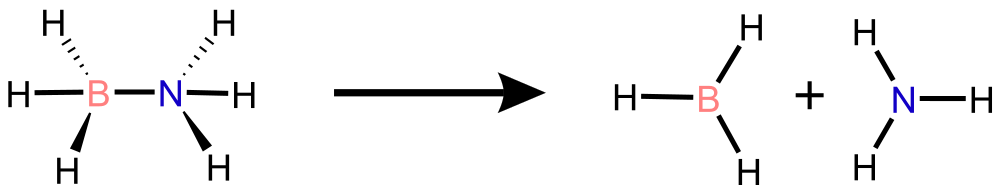

Tutorial
Welcome to the SPARC tutorial!
Ammonia Borate (NH\(_3\)BH\(_3\))
{kind=link}

Schematic representation of B-N bond dissociation in NH\(_3\)BH\(_3\) .
Introduction
In this tutorial, we demonstrate how to run the SPARC workflow end-to-end. We will show how to:
Prepare input files (see Input File for details),
Prepare initial ab initio data,
Train interatomic potentials with DeepMD-kit,
Run machine learning molecular dynamics (ML/MD),
Using active learning with Query-by-Committee (QbC) to adaptively improve the model.
Preparation
First, create a new test directory and download the tutorial data. If you haven’t installed SPARC yet, see SPARC Installation Guide or the Quick Start Guide guide.
mkdir nh3bh3_test
cd nh3bh3_test
wget https://github.com/rahulumrao/sparc/raw/main/examples/AmmoniaBorate.zip
unzip AmmoniaBorate.zip
You can also download the archive directly from here.
If you \(cd\) to the unpacked folder, it will have the following files:
$ cd AmmoniaBorate
$ ls
INCAR POSCAR input.json input.yaml iter_000000 plumed_dp.dat
$ tree iter_000000
iter_000000
└── 00.dft
└── AseMD.traj
POSCAR: Initial structure in VASP format,INCAR: VASP input file,plumed_dp.dat: Plumed file,input.yaml: SPARC workflow configuration file,input.json: DeepMD training parameters.
The file AseMD.traj inside the folder iter_000000/00.dft contains the initial AIMD data computed with VASP to start the workflow. Now we only need to prepare the input.yaml ( see Input File) file, which defines the entire SPARC workflow.
The input.yaml defines the SPARC workflow, which is organized into four main steps:
Initial Data preparation with ab initio configurations
Run DeepMD-kit for Training ML models interatomic potential models,
Use ASE MD engine together with Plumed to run Machine Learning Molecular Dynamics (ML/MD) sampling,
Iteratively improve ML potential with Active learning by detecting poorly represented regions with new candidates.
Note
Each file is included in this tutorial for reference.
# YAML configuration file for SPARC package
# General settings
general:
structure_file: "POSCAR" # Input structure
# DFT calculator settings
dft_calculator:
engine: "VASP" # DFT engine name
template_file: "INCAR" # Path to INCAR file
exe_command: "mpirun -np 16 /path/to/VASP/bin/vasp_std" # VASP executable
# Ab initio MD settings
aimd_setup:
ensemble: "NVT" # Ensemble for MD simulation
temperature: 350.0 # Temperature in Kelvin
timestep_fs: 1.0 # Timestep for MD simulation (fs)
steps: 0 # Number of AIMD steps (0 = skip AIMD)
log_frequency: 1 # Output frequency in steps
restart: false # Resume from checkpoint
thermostat:
type: "Nose" # Nose-Hoover thermostat
tdamp: 10.0 # Damping time (fs)
plumed:
enabled: false # Enable PLUMED for AIMD
plumed_file: "plumed_dft.dat"
kT: 0.02585
restart: false
# MLIP training + ML-MD settings
mlip_setup:
training: false # Enable MLIP training
data_dir: "Training_Data" # Directory for training data
input_file: "input.json" # DeepMD training input JSON
skip_min: 0 # Skip first N frames
skip_max: null # Skip frames beyond this index
num_models: 2 # Number of committee models
MdSimulation: true # Run ML-MD simulation
timestep_fs: 1.0 # ML-MD timestep (fs)
md_steps: 500000 # ML-MD steps
multiple_run: 1 # Independent MD runs
log_frequency: 80 # Output frequency in steps
thermostat:
type: "Nose"
tdamp: 10.0
plumed:
enabled: true # Enable PLUMED for ML-MD
plumed_file: "plumed_dp.dat"
kT: 0.02585
restart: false
# Active Learning
active_learning: true # Enable active learning loop
learning_restart: false # Resume AL from checkpoint
latest_model: null # Model path on restart
iteration: 5 # Maximum AL iterations
model_dev:
f_min_dev: 0.05 # Lower force deviation threshold (eV/Å)
f_max_dev: 0.5 # Upper force deviation threshold (eV/Å)
# Distance sanity checks (optional)
distance_metrics:
- pair: [0, 7]
min_distance: 1.0
max_distance: 7.0
- pair: [1, 7]
min_distance: 0.8
max_distance: 1.5
- pair: [0, 6]
min_distance: 0.8
max_distance: 1.5
# Output file names (all optional)
output:
log_file: "AseMD.log"
xyz_file: "AseTraj.xyz"
aimdtraj_file: "AseMD.traj"
dptraj_file: "dpmd.traj"
{
"_comment": " model parameters",
"model": {
"type_map": ["B", "H", "N"],
"descriptor" :{
"type": "se_e2_a",
"sel": "auto",
"rcut_smth": 0.50,
"rcut": 6.00,
"neuron": [25, 50, 100],
"resnet_dt": false,
"axis_neuron": 16,
"seed": 12123,
"_comment": " that's all"
},
"fitting_net" : {
"neuron": [120, 120, 120],
"resnet_dt": true,
"seed": 12123,
"_comment": " that's all"
},
"_comment": " that's all"
},
"learning_rate" :{
"type": "exp",
"decay_steps": 5000,
"start_lr": 0.001,
"stop_lr": 3.51e-8,
"_comment": "that's all"
},
"loss" :{
"type": "ener",
"start_pref_e": 0.02,
"limit_pref_e": 1,
"start_pref_f": 1000,
"limit_pref_f": 1,
"start_pref_v": 0,
"limit_pref_v": 0,
"_comment": " that's all"
},
"training" : {
"training_data": {
"systems": ["training_data"],
"batch_size": "auto",
"_comment": "that's all"
},
"validation_data":{
"systems": ["validation_data"],
"batch_size": "auto",
"numb_btch": 1,
"_comment": "that's all"
},
"numb_steps": 500000,
"seed": 12123,
"disp_file": "lcurve.out",
"disp_freq": 1000,
"save_freq": 10000,
"_comment": "that's all"
},
"_comment": "that's all"
}
# Global Parameters #
SYSTEM = NH3BH3
ISTART = 0
ICHARG = 2
ISPIN = 1
ENCUT = 300
LCHARG = .FALSE.
LWAVE = .FALSE.
# Electronic Relaxation #
ISMEAR = 0
SIGMA = 0.05
EDIFF = 1E-05
NH3BH3
1.0000000000000000
12.0000000000000000 0.0000000000000000 0.0000000000000000
0.0000000000000000 12.0000000000000000 0.0000000000000000
0.0000000000000000 0.0000000000000000 12.0000000000000000
B H N
1 6 1
Direct
0.3779049269710626 0.4608129327206285 0.3686019834737309
0.6453715677372998 0.5804071143184686 0.7242016573374457
0.5854579728428035 0.5273358295291573 0.6234820843519628
0.6923831185069531 0.6059197989660134 0.5995049316749146
0.4105296494597752 0.4845721146109838 0.2757983426625543
0.3076168814930469 0.3940802010339866 0.3962878597352457
0.4170584773274015 0.4942723187483011 0.4581363881549123
0.6647284028152569 0.5421008292213045 0.6505695389414967
Execute SPARC
sparc -i input.yaml
Warning
Ensure all environment variables are properly set before execution. See the Quick Start Guide section for details.
This launches the first iteration (``iter_000000``):
iter_000000/
├── 00.dft # Ab initio reference data
├── 01.train # Training of ML models
└── 02.dpmd # ML-driven MD simulation
Training ML Models
SPARC automatically collects ab initio data and prepares training/validation sets. It then launches MLIP training. Depending on user settings, SPARC trains n models and creates separate training_n directories.
The input.json file is native to the DeePMD-kit package. See the DeepMD training documentation for a full list of parameters.
$ cd iter_000000/01.train/training_1
$ less lcurve.out
# step rmse_val rmse_trn rmse_e_val rmse_e_trn rmse_f_val rmse_f_trn lr
# If there is no available reference data, rmse_*_{val,trn} will print nan
0 3.99e+01 3.18e+01 9.27e-01 9.28e-01 1.26e+00 1.01e+00 1.0e-03
1000 6.78e+00 6.19e+00 8.65e-01 8.59e-01 2.14e-01 1.95e-01 1.0e-03
2000 4.98e+00 4.83e+00 1.77e-01 1.57e-01 1.57e-01 1.53e-01 1.0e-03
3000 2.00e+00 2.75e+00 8.99e-02 9.15e-02 6.32e-02 8.69e-02 1.0e-03
.
.
497000 1.14e-02 8.39e-03 3.95e-04 2.66e-04 1.12e-02 8.20e-03 3.9e-08
498000 9.45e-03 7.52e-03 1.51e-04 3.71e-04 9.26e-03 7.30e-03 3.9e-08
499000 8.35e-03 9.65e-03 1.84e-04 1.48e-04 8.17e-03 9.46e-03 3.9e-08
500000 1.97e-02 1.04e-02 2.98e-04 9.08e-05 1.94e-02 1.02e-02 3.5e-08
Note
You can also visualize the learning process by plotting the lcurve.out file. See Analysis section.
Running ML/MD
Once models are trained, SPARC selects one of them to initiate ML/MD simulations:
$ cd iter_000000/02.dpmd
$ ls
AseMolDyn.log COLVAR dpmd.traj HILLS_0 HILLS_1 Iter0_dpmd.log
AseTraj.xyz dft_candidates model_dev_0.out set.000 set.001
type_map.raw type.raw
SPARC tracks atomic force error across models:
$ less model_dev_0.out
$ # iter_000000/02.dpmd
# step max_devi_v min_devi_v avg_devi_v max_devi_f min_devi_f avg_devi_f devi_e
0 4.288987e-02 1.236075e-03 2.209929e-02 8.148417e-01 5.249647e-02 3.124690e-01 3.175687e-02
1 9.956690e-02 2.644640e-03 4.849840e-02 4.707522e-01 9.577766e-02 2.531237e-01 1.749532e-02
2 1.359298e-01 5.290284e-03 6.208815e-02 3.054830e-01 6.672351e-02 1.852998e-01 2.692625e-02
3 8.619494e-02 1.549988e-02 4.847261e-02 2.494638e-01 9.084693e-03 1.613021e-01 2.746094e-02
4 1.177004e-01 5.339600e-03 5.895431e-02 2.977156e-01 2.450532e-02 1.692072e-01 3.893455e-02
Frames with atomic forces between the thresholds are automatically flagged as candidates for relabeling using ab intio and are stored in iter_000000/02.dpmd/dft_candidates folder. These will appear in the next iteration folder.
$ ls iter_000000/02.dpmd/dft_candidates
0001 0002 0003 0004 0005 0006 0007 0008 0009 0010
$ tree iter_000000/02.dpmd/dft_candidates
├── 0001
│ └── POSCAR
├── 0002
│ └── POSCAR
Active Learning Loop
The workflow continues automatically:
iter_000001/
├── 00.dft
├── 01.train
└── 02.dpmd
Each AL cycle consists of:
Selecting new candidate structures,
Relabeling with ab initio,
Retraining ML models,
Running ML/MD with updated potentials.
Monitor Workflow
SPARC provides utilities for monitoring the workflow. For example:
from sparc.src.utils import PlotForceDeviation
PlotForceDeviation("iter_000000/02.dpmd/", iteration_window='all')
Note
See the notebook for analysis functions and figures:
PLUMED Plugin
SPARC is primarily designed to streamline the generation of training data. By using it with PLUMED plugin, standard molecular dynamics simulations can be extended beyond equilibrium sampling. This enables the ML potential to explore new regions of configurational space by applying appropriate acceleration or biasing strategies.
To enable PLUMED, set the plumed block under mlip_setup in input.yaml:
mlip_setup:
plumed:
enabled: true
plumed_file: "plumed_dp.dat"
An example PLUMED input file (plumed_dp.dat) is provided in this tutorial. It defines
the collective variables and biasing scheme for the NH\(_3\)BH\(_3\) system.
See the PLUMED documentation for details on constructing
custom CVs and bias potentials.
# PLUMED
d1: DISTANCE ATOMS=1,8
UPPER_WALLS ARG=d1 AT=0.55 KAPPA=100000.0 EXP=2 EPS=1 OFFSET=0 LABEL=uwall
# Define species for contact matrix
# n=6, m=12, R0=0.265(nm) [B/N-B/N], and R0=0.222(nm) [C-H]
DENSITY SPECIES=1 LABEL=B
DENSITY SPECIES=2-7 LABEL=H
DENSITY SPECIES=8 LABEL=N
# B-B B-H B-N H-H H-N N-N
contact_mat: CONTACT_MATRIX ATOMS=B,H,N SWITCH11={RATIONAL D_0=0.0 R_0=0.800 NN=6 MM=12} SWITCH12={RATIONAL D_0=0.0 R_0=0.125 NN=6 MM=12} SWITCH13={RATIONAL D_0=0.0 R_0=0.222 NN=6 MM=12} SWITCH22={RATIONAL D_0=0.0 R_0=0.500 NN=6 MM=12} SWITCH23={RATIONAL D_0=0.0 R_0=0.125 NN=6 MM=12} SWITCH33={RATIONAL D_0=0.0 R_0=0.800 NN=6 MM=12}
# SPRINT coordinate
ss: SPRINT MATRIX=contact_mat
# PbMetaD
pb: PBMETAD ARG=ss.coord-0,ss.coord-7 SIGMA=0.1,0.1 HEIGHT=2.0 PACE=1000 FILE=HILLS_0,HILLS_1
#
PRINT ARG=d1,ss.*,pb.* FILE=COLVAR STRIDE=3
# FLUSH data
FLUSH STRIDE=250
Next Step
Try replacing the system with your own molecule.